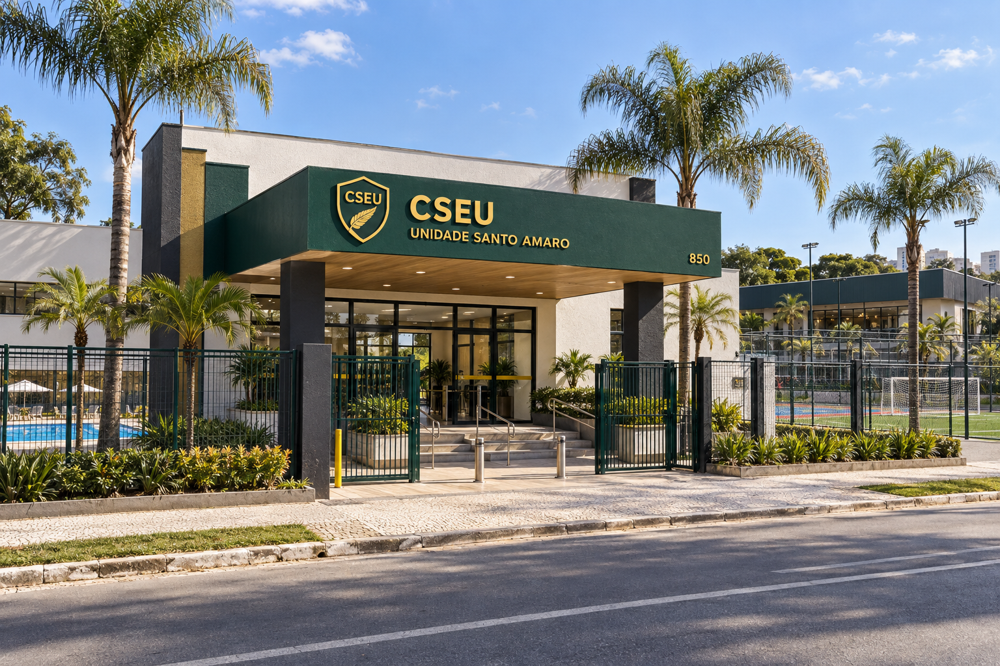
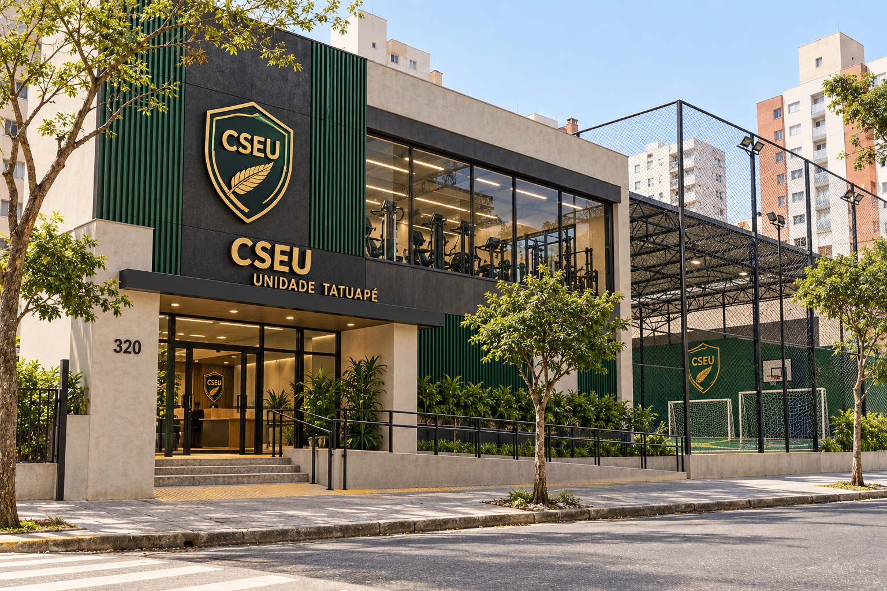
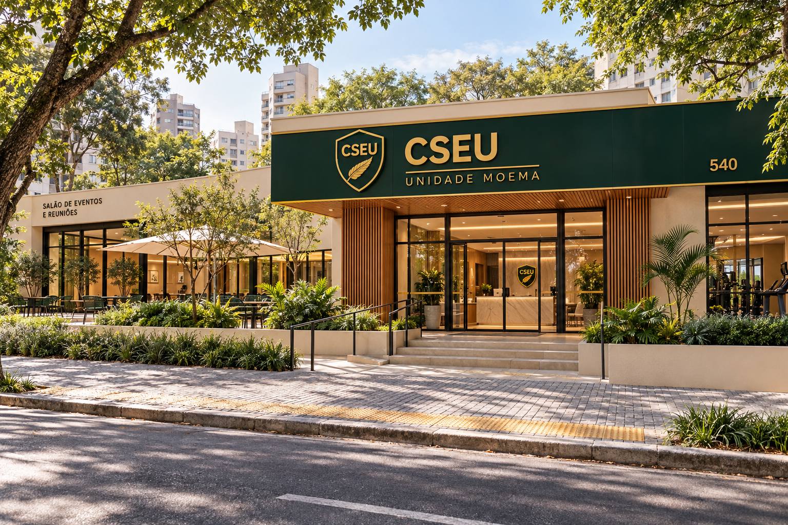
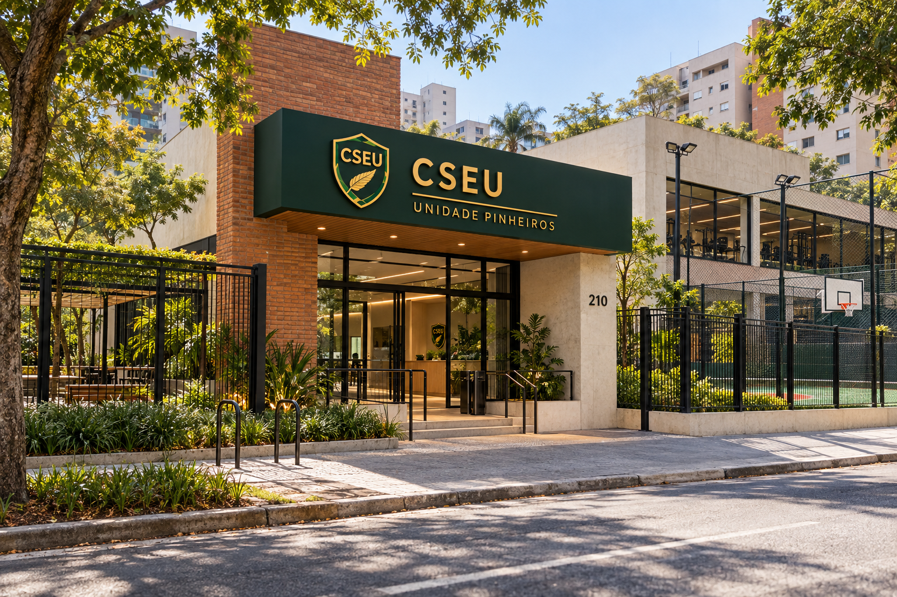

Nossas Unidades
O Clube Social e Esportivo União possui unidades localizadas em diferentes regiões de São Paulo, oferecendo espaços para esporte, lazer, eventos e atividades para seus frequentadores.
Unidade Santo Amaro

Localização: Santo Amaro - São Paulo/SP
Endereço: Avenida das Nações, 850 - Santo Amaro, São Paulo - SP
Horário: Segunda a domingo, das 06:00 às 22:00.
Esta unidade possui piscinas, quadras poliesportivas, academia, campo de futebol, área social e espaços destinados à realização de eventos.
Unidade Tatuapé

Localização: Tatuapé - São Paulo/SP
Endereço: Rua dos Esportes, 320 - Tatuapé, São Paulo - SP
Horário: Segunda a sábado, das 06:00 às 21:00.
A unidade é voltada para atividades esportivas, treinamentos e aulas, contando com quadras, academia, vestiários e espaços para atletas.
Unidade Moema

Localização: Moema - São Paulo/SP
Endereço: Avenida dos Esportes, 540 - Moema, São Paulo - SP
Horário: Segunda a domingo, das 07:00 às 22:00.
A unidade oferece espaços de lazer, academia, quadras esportivas, área de convivência e ambientes destinados a eventos e reuniões.
Unidade Pinheiros

Localização: Pinheiros - São Paulo/SP
Endereço: Rua das Palmeiras, 210 - Pinheiros, São Paulo - SP
Horário: Segunda a domingo, das 06:00 às 22:00.
Esta unidade conta com quadras, área esportiva, academia, espaços de convivência e estrutura para diferentes atividades do clube.